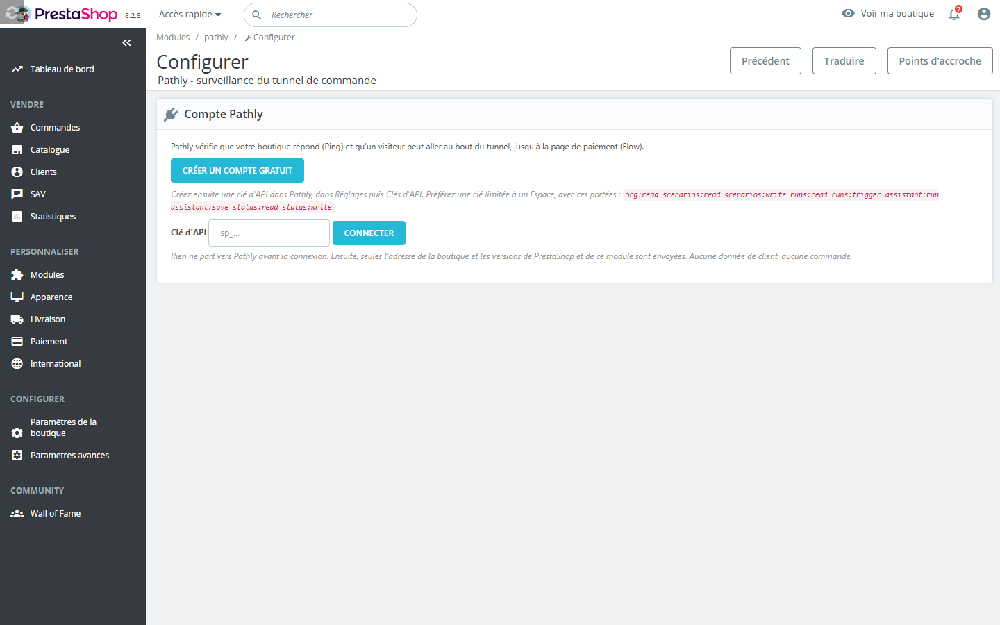
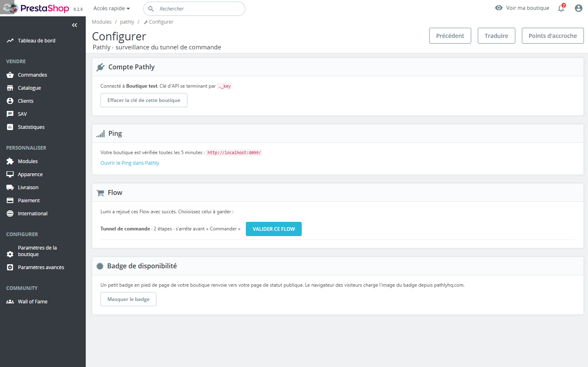
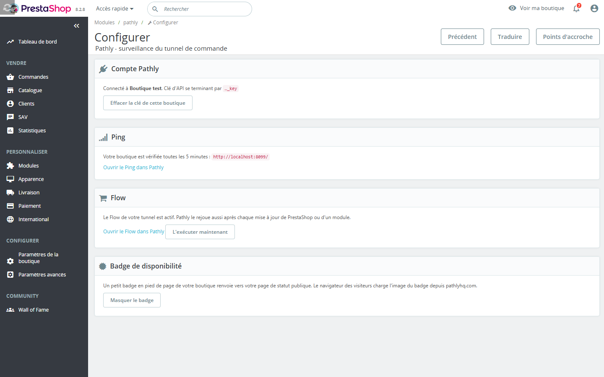
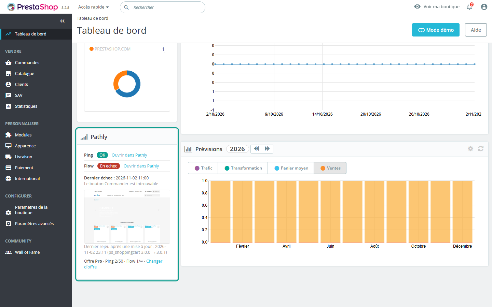
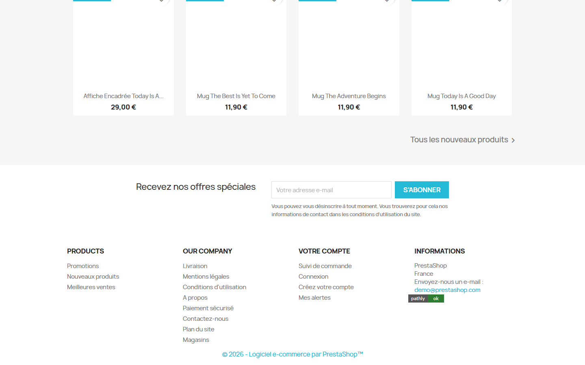

Guide d'installation et d'utilisation du module PrestaShop. Pour PrestaShop 1.7.7 à 9.
Pathly watches the path. Ping if it's up. Flow if a user can walk it. Chain if the services behind it hold.
Le module est gratuit. Il se connecte à un compte Pathly : l'offre Solo est gratuite et sans carte bancaire. Les offres payantes de Pathly sont un abonnement séparé (tarifs dans votre compte Pathly).
| PrestaShop | 1.7.7 à 9 |
|---|---|
| PHP | 7.2 ou plus, selon votre version de PrestaShop. Extensions curl et json. |
| HTTPS sortant | La boutique doit joindre https://api.pathlyhq.com. Aucune autre adresse n'est appelée. |
| Boutique publique | Pathly visite la boutique depuis internet : une boutique en maintenance, protégée par un mot de passe ou sur une adresse locale ne peut pas être surveillée. |
| Compte Pathly | Offre Solo gratuite, sans carte bancaire. |
pathly.zip.Seul un employé au profil SuperAdmin voit la page de réglages et l'encart.
org:read scenarios:read scenarios:write runs:read runs:trigger assistant:run assistant:save status:read status:write.

Lumi ne paie rien, n'envoie aucun formulaire et ne saisit que des valeurs de test. Chaque exécution du Flow crée un panier de test sur la boutique : il peut déclencher vos relances de panier abandonné et apparaître dans vos statistiques de paniers. Excluez l'adresse et le nom de test de ces outils.
PrestaShop 9 signale la mise à jour d'un module par le hook actionModuleUpgradeAfter, PrestaShop 8 par actionBeforeUpgradeModule. Sur toutes les versions, le module compare aussi les versions installées de PrestaShop et des modules, au plus toutes les 5 minutes, quand un administrateur ouvre le back-office. Deux rejeux sont espacés d'au moins 10 minutes. Le bouton L'exécuter maintenant lance un rejeu à la main.

Sur le tableau de bord du back-office : état du Ping et du Flow, date et capture du dernier échec, dernier rejeu, offre et quotas, et liens vers Pathly.

Éteint par défaut. Cliquez sur Afficher le badge : Pathly publie une page de statut, et un petit badge en pied de page de la boutique renvoie vers elle. Le navigateur de vos visiteurs charge alors l'image du badge depuis les serveurs de Pathly : mentionnez-le dans votre politique de confidentialité. Cliquez sur Masquer le badge pour le retirer et dépublier la page.

La désinstallation efface tous les réglages du module dans la boutique. Vos Ping et Flow restent dans votre compte Pathly, où vous pouvez les supprimer.
| Pathly a refusé cette clé d'API | Vérifiez que la clé est active, non révoquée, et qu'elle a les portées listées plus haut. |
|---|---|
| Pathly ne joint pas votre boutique | La boutique doit être en ligne, hors maintenance, sur une adresse publique. |
| Pathly est injoignable depuis votre serveur | Le serveur doit autoriser le HTTPS sortant vers api.pathlyhq.com. |
| Lumi ne trouve pas le tunnel | Enregistrez le Flow vous-même dans Pathly, sans code. |